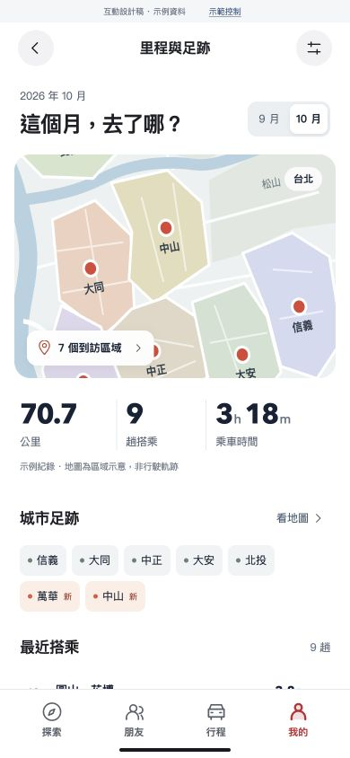
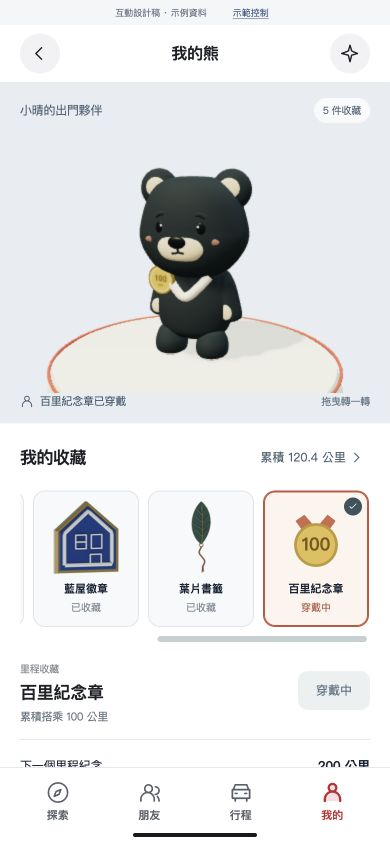
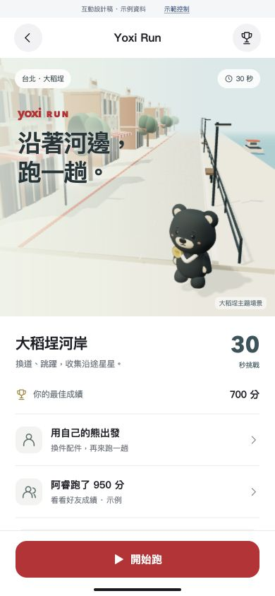
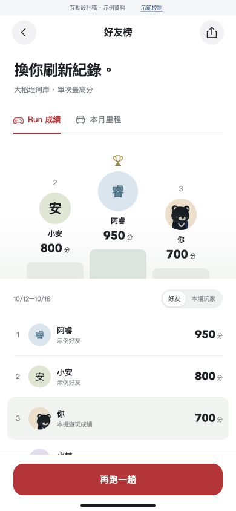

搭車留下足跡，
平常也有得玩。
出行紀錄 → 個人收藏 → 城市 Run → 好友挑戰。探索、同行、音樂與破冰繼續保留。
01 · 記錄

我的里程與足跡
公里、次數、到過的地方
02 · 收藏
自己的熊，自己搭配
出行里程和遊戲留下的收藏
03 · 遊玩
帶著熊，跑一段城市
30 秒 · 常設大稻埕路線
04 · 朋友
同一條路，換你挑戰
Run 成績與搭乘里程分開看
畫面為本次實際操作截圖。個人里程、好友與對手為示例；Run 已可操作、計分、解鎖收藏並保存在此瀏覽器。